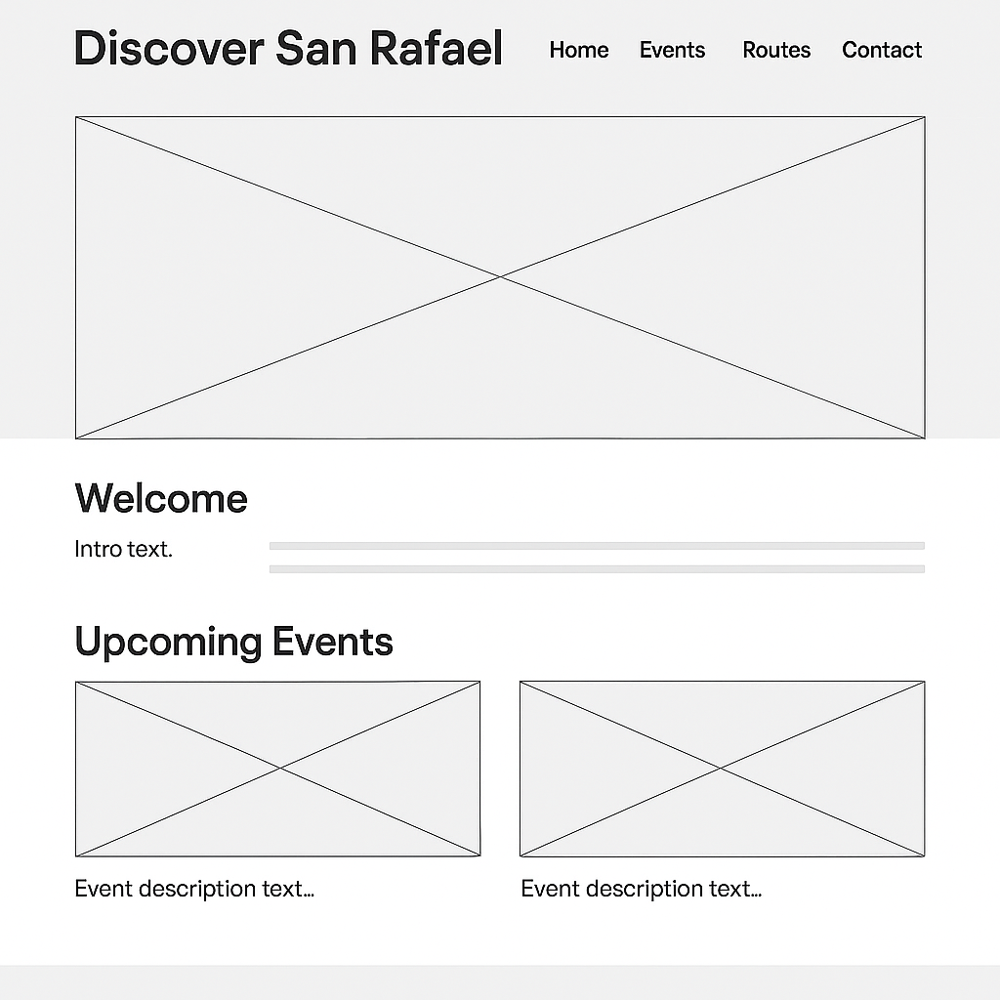

Site Name
Discover San Rafael — A site designed to promote tourism, events, and scenic routes in San Rafael, Mendoza. The name emphasizes exploration and discovery of local culture and nature.
Site Purpose
The website showcases upcoming events and curated scenic routes for locals and tourists. It includes an interactive map and dynamic event listings fetched from a local JSON file.
Scenarios
- What events are happening this month in San Rafael?
- What are the best routes for sightseeing or biking?
- I'm visiting for the first time — where should I start exploring?
- Where can I find typical local food or restaurants?
- As a local, how can I stay updated on cultural or community events?
Site Structure
- index.html — Home: Welcome section, intro to events and routes, hero image.
- events.html — Dynamic listing of at least 15 events loaded from JSON.
- routes.html — Scenic routes with interactive Google Maps and route descriptions.
Color Schema
- #7B1E3B — Wine red: titles, buttons, highlights.
- #D4A373 — Autumn gold: accents, links, hover effects.
- #A0E9EF — Light aqua blue: backgrounds, secondary buttons.
- #FAF9F6 — Light background: page background.
- #2E2E2E — Dark gray: body text and footer.
Typography
- Montserrat — For headings and titles.
- Roboto — For body text, paragraphs, and forms.
Wireframe
Mobile view:

Desktop view:
